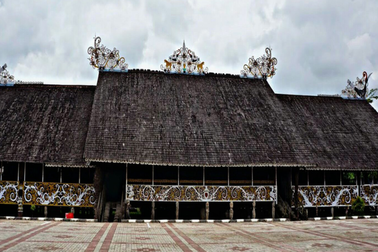
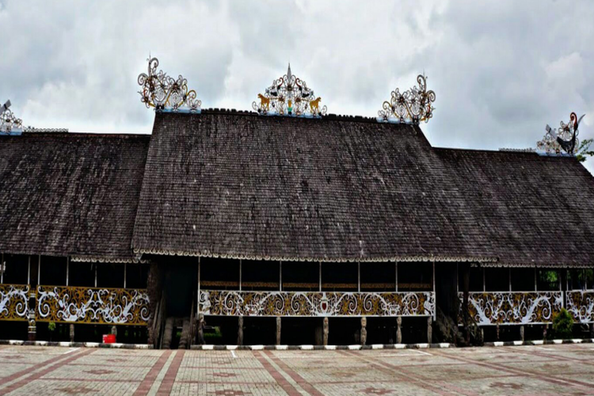
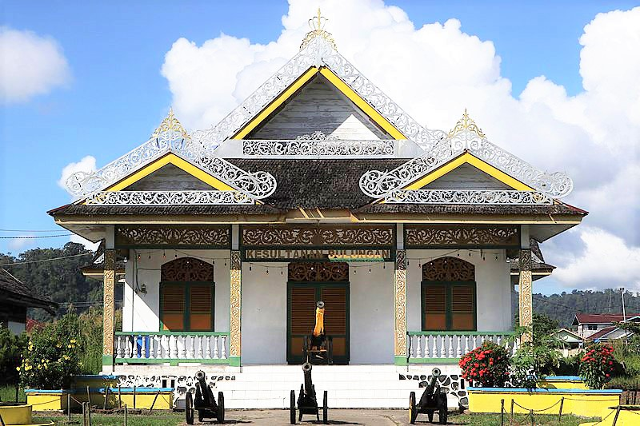
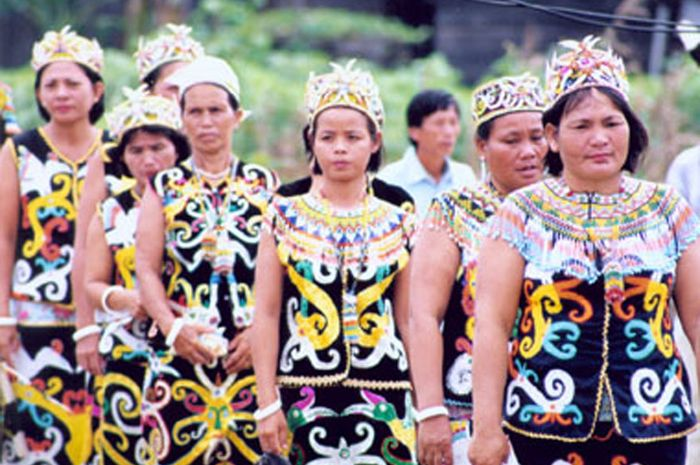
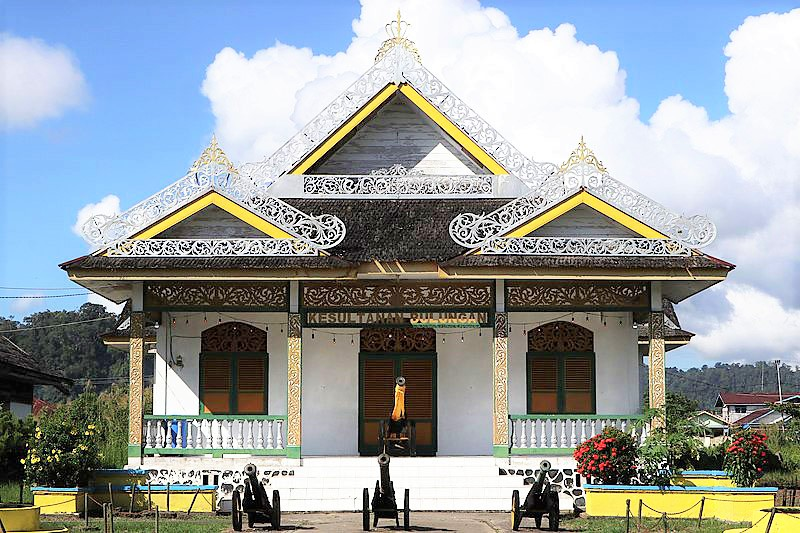
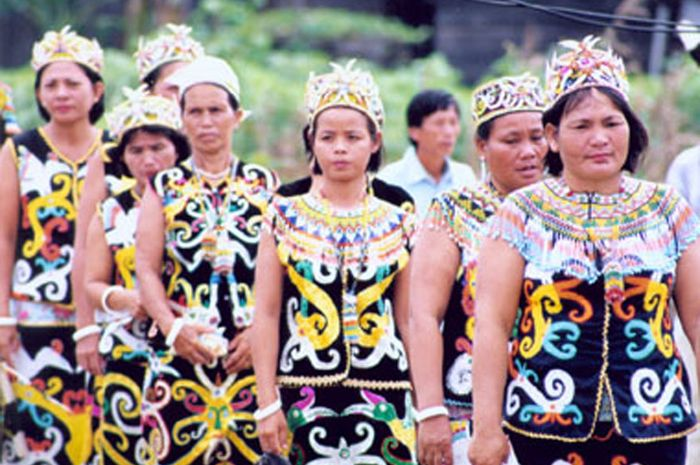
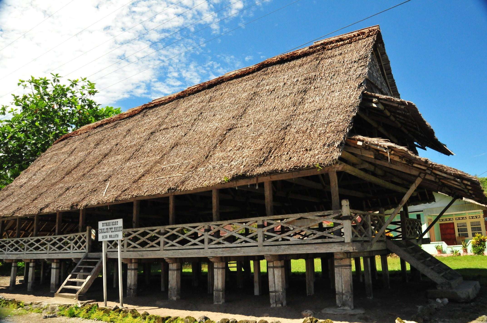
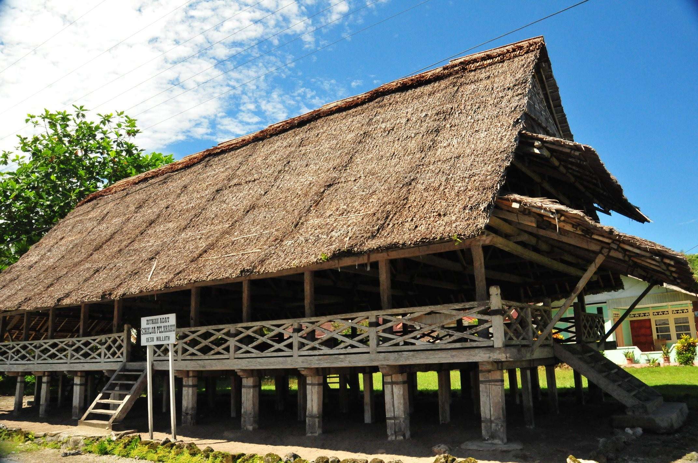

 



Rumah adat Lamin merupakan rumah adat yang menjadi tempat kediaman suku Dayak. Bangunan rumah adat Lamin berukuran kurang lebih 300 meter dengan lebar 15 meter.
Ketinggian rumah panggung khas Kalimantan Timur ini mencapai 3 meter. Biasanya, rumah ini memiliki banyak ruangan, yang bisa ditinggali sekitar 25-30 kelapa keluarga atau 100 orang.
Ciri khas rumah adat Lamin bisa kamu temui pada dekorasi rumah dengan motif salur pakis berbagai warna.
Warna tersebut memiliki makna khusus, seperti warna kuning melambangkan kekayaan dan keagungan, merah sebagai lambang keabadian, putih berarti kesucian dan kesederhanaan serta hitam sebagai penolak bala (musibah).
Tidak hanya itu, rumah adat Lamin juga memiliki banyak ukiran pada tiang penyangga rumah dengan bentuk kepala manusia atau hewan. Sedangkan pada bagian atap rumah, dihiasi dengan patung berbentuk naga atau burung enggang.
Selain itu, pada rumah adat Lamin juga dibangun patung blonthang atau patung untuk menangkal roh-roh jahat, serta menandakan status sosial.
 
